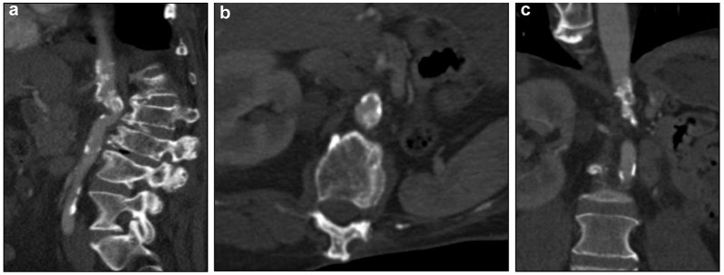
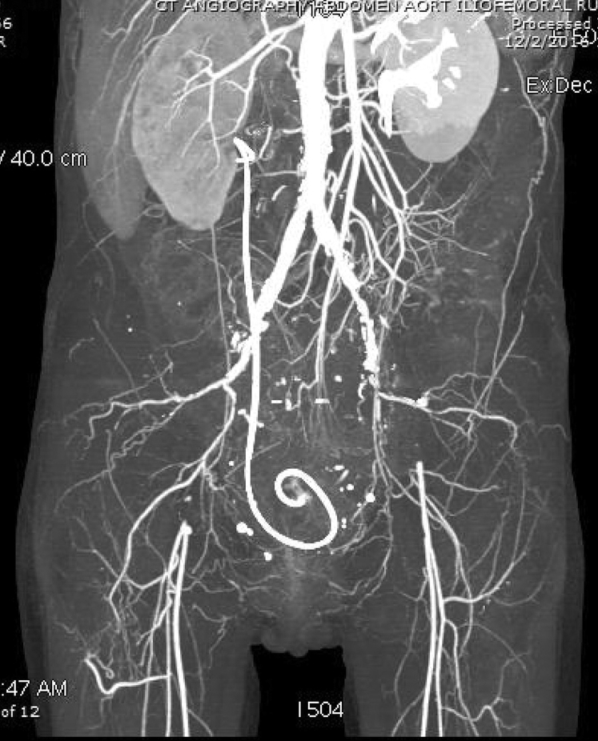
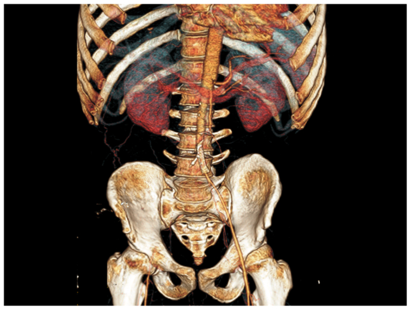

6707 — Bệnh động mạch ngoại biên do xạ: vì sao hẹp DÀI – NHẴN – ĐÚNG TRƯỜNG CHIẾU, và khi nào nong mạch, khi nào bắc cầu ra ngoài vùng xạ
Tags: pattern:hep-dong-mach pattern:tac-dong-mach pattern:hep-dai-khong-voi pattern:trong-truong-chieu vung:dong-mach-chau vung:chi-duoi vung:dong-mach-chu-bung anatomy:dong-mach-chau-dui protocol:CTA-chi-duoi protocol:ABI score:TASC-II
Mức chắc chắn (certainty): tổng hợp y văn (literature synthesis) — ghép tổng quan hệ thống 25 nghiên cứu / 43 ca bệnh động mạch chi dưới do xạ (Int Angiol 2021, PMID 33660497), ca TASC D tắc chậu–đùi hai bên sau xạ cổ tử cung (J Vasc Surg Cases Innov Tech 2018, PMCID PMC6012990, CC BY-NC-ND), ca hẹp ĐMC cạnh tạng 53 năm sau xạ Wilms (J Vasc Surg Cases Innov Tech 2025, PMCID PMC12283543, CC BY 4.0), ca tắc ĐMC–chậu sau xạ Ewing thời thơ ấu (J Vasc Surg Cases Innov Tech 2024, PMCID PMC10788263, CC BY-NC-ND) và loạt 12 ca giả phình mạch ngoại biên do xạ (J Int Med Res 2021, PMCID PMC8047089, CC BY-NC). Không có ca do nhóm tự chụp.
Kịch bản thực hành (ghép từ ba ca dưới đây, không phải ca nguyên văn): nữ 51 tuổi, ung thư cổ tử cung đã xạ 45 Gy ngoài + 35 Gy brachy cách đây 4 năm, nay đau cách hồi hai chân rồi đau khi nghỉ; không hút thuốc, không đái tháo đường, lipid bình thường. Câu hỏi: vì sao mạch "lành" lại tắc, đọc CTA thế nào để không gọi là xơ vữa, và nong hay mổ? Bài chốt ba quyết định: (1) nghi bệnh mạch do xạ khi hẹp/tắc DÀI, NHẴN, ÍT VÔI, nằm ĐÚNG trường chiếu và các mạch NGOÀI trường chiếu tương đối lành — tiềm tàng trung vị 11–12 năm, liều trung vị 40 Gy; (2) mổ hở vẫn là "chuẩn vàng" cho tắc dài TASC D, nhưng miệng nối phải đặt ngoài vùng xạ vì nhiễm mạch ghép nhân tạo tới 21%; (3) can thiệp nội mạch dùng được cho tổn thương ngắn/không mổ được, nhưng phải theo dõi lâu — tái phát triệu chứng 16% và can thiệp lại 8% ngay trong các loạt ngắn hạn. Nối 6706 – Bệnh động mạch vành do xạ, 6705 – Bệnh van tim do xạ, 6700 – Biến chứng muộn sau Wilms, 260 – Hẹp động mạch cảnh do xạ, 1670 – Rò động mạch chậu – niệu quản sau xạ.
1. Tổng quan bệnh học – cơ chế hình ảnh: vì sao mạch trong trường xạ hẹp "kiểu khác" xơ vữa
- Dịch tễ (epidemiology): bệnh động mạch chi dưới do xạ (radiation-induced arteriopathy — RIA) hiếm nhưng tăng dần vì người sống sót ung thư sống lâu hơn. Tổng quan hệ thống gom 25 nghiên cứu, 43 bệnh nhân: thời gian từ xạ đến triệu chứng trung vị 12 năm (9 ngày – 49 năm), liều xạ trung vị 40 Gy (PMID 33660497). Một loạt khác mô tả khoảng 2–47 năm, trung vị 11 năm, và thay đổi X-quang của động mạch chậu–đùi xuất hiện sau 39–80 Gy (dẫn trong PMC6012990).
- Biểu hiện lâm sàng (presentation): đau cách hồi 52%, thiếu máu chi đe dọa (CLTI) 11%, thiếu máu chi cấp (ALI) 9%, chảy máu/khối đập 17%, không triệu chứng 11% (43 ca; PMID 33660497). Nghĩa là một nửa chỉ đau cách hồi — dễ bị quy cho "đau thần kinh tọa" hoặc "di chứng xạ" và bỏ qua.
- Vị trí (location): động mạch chậu 65%, đùi–khoeo 28%, cả trên và dưới dây chằng bẹn 7% (PMID 33660497). Đúng với bản đồ liều: khung chậu là nơi xạ cổ tử cung/tiền liệt tuyến/trực tràng đi qua, vùng bẹn là nơi xạ hạch bẹn – chậu.
- TẠI SAO tế bào nội mô là "bia" chính: tia xạ gây đứt gãy DNA, stress oxy hóa, chết tế bào nội mô và viêm mạn → tăng sinh xơ nội mạc (fibrointimal proliferation), xơ hóa lớp áo giữa và áo ngoài, tổn thương vasa vasorum (PMC6012990). Kết quả là dày thành đồng tâm, hẹp lòng dài, nhẵn, mảng nghèo lipid — khác mảng xơ vữa cổ điển có lõi lipid, vôi hóa và tổn thương lệch tâm ở chỗ phân nhánh.
- TẠI SAO "ít vôi": mảng xơ do xạ chủ yếu là collagen/fibrin, ít lipid nên không vôi hóa sớm. Nhưng không phải tuyệt đối: xạ cũng đẩy nhanh xơ vữa sẵn có, nên ca hẹp ĐMC cạnh tạng sau xạ Wilms có vôi hóa dày, lan tỏa (PMC12283543), và ca tắc chậu–đùi sau xạ cổ tử cung có mảnh vôi rải rác. Quy tắc thực hành: vôi hóa không loại trừ bệnh do xạ; vị trí và chiều dài tổn thương mới là manh mối.
- TẠI SAO tiềm tàng nhiều năm: xơ hóa tiến triển chậm, tích lũy theo liều; đồng thời xạ làm mất khả năng tái tạo nội mô nên tổn thương không "lành" như tổn thương cơ học. Vì vậy một người 32 tuổi (ca Ewing) đã có tắc ĐMC–chậu TASC D sau xạ thời thơ ấu (PMC10788263), còn người 56 tuổi (ca Wilms) có hẹp ĐMC cạnh tạng 53 năm sau xạ (PMC12283543).
- TẠI SAO mạch NGOÀI trường chiếu "lành" là chốt: xơ vữa là bệnh toàn thân, còn RIA khu trú theo bản đồ liều. Khi CTA thấy tắc dài một đoạn chậu–đùi nhưng ĐMC trên thận và động mạch chi đối bên sạch, phải nghĩ RIA (PMC6012990). Ngược lại, hẹp ngắn ở chỗ phân nhánh + vôi hóa lan + nhiều yếu tố nguy cơ → xơ vữa.
- TẠI SAO có ca chảy máu/giả phình: xạ làm thành mạch mỏng, xơ, mất nuôi dưỡng → giả phình (pseudoaneurysm) và vỡ muộn sau nhiều năm, đặc biệt ở bẹn. Loạt 12 ca giả phình mạch ngoại biên do xạ có kích thước 10–30 mm (trung bình 20,42 mm) (PMC8047089) — đây là mặt "chảy máu" của cùng bệnh lý, không phải biến chứng ngẫu nhiên.
2. Mẫu hình + chẩn đoán phân biệt theo vị trí (gamut)
- Mẫu hình chính (pattern): hẹp hoặc tắc một đoạn dài (thường > 5–10 cm), bờ nhẵn, đồng tâm, không có mảng lồi phức tạp, vôi hóa ít hoặc không, không có tuần hoàn bàng hệ kiểu "bệnh mạn" ở đoạn xa; các mạch ngoài trường chiếu tương đối bình thường.
- Gamut theo vị trí:
- Động mạch chậu chung/ngoài (65%): sau xạ tiểu khung (cổ tử cung, tiền liệt tuyến, trực tràng, bàng quang); thường hai bên, có thể kèm hẹp ĐMC dưới thận.
- Động mạch đùi chung/nông – khoeo (28%): sau xạ vùng bẹn (lymphoma, sarcoma chi dưới, ung thư dương vật) hoặc tia xạ xuyên qua đùi; dễ kèm giả phình và loét da.
- ĐMC bụng – cạnh tạng (thể nặng nhất): sau xạ bụng thời thơ ấu (Wilms, neuroblastoma, Ewing); kèm xơ quanh ĐMC, ĐMC nhỏ/hypoplasia, khung chậu thiểu sản — mổ vào bụng cực khó (PMC12283543, PMC10788263).
- Cả hai tầng (7%): hẹp/tắc từ chậu đến khoeo — thường gặp ở người sống sót sarcoma chi dưới.
- Gamut chẩn đoán phân biệt của "đau cách hồi ở người trẻ/không yếu tố nguy cơ":
- RIA — tiền sử xạ đúng vùng, hẹp dài, mạch ngoài trường chiếu lành.
- Xơ vữa sớm — rối loạn lipid/Lp(a), hút thuốc, đái tháo đường; tổn thương chỗ phân nhánh, vôi hóa.
- Takayasu (viêm ĐMC – mạch lớn) — nữ trẻ, hẹp ĐMC/dưới đòn/cảnh, thành mạch dày đồng tâm, ngấm thuốc thành mạch trên MRI, CRP tăng.
- Buerger (viêm tắc mạch Thromboangiitis obliterans) — hút thuốc, tổn thương động mạch nhỏ – trung bình ở xa, "corkscrew", không hẹp chậu.
- Bệnh động mạch chậu do đạp xe (iliac endofibrosis) — vận động viên, hẹp động mạch chậu ngoài khi gắng sức, CTA lúc nghỉ thường bình thường.
- Chèn ép khoeo/hội chứng động mạch khoeo bắt giữ — người trẻ, hẹp khi gấp bàn chân.
- Thoát vị đĩa đệm/hẹp ống sống — đau kiểu thần kinh, mạch bình thường; đây là chẩn đoán nhầm thường gặp của ca xạ tiểu khung (PMC6012990).
3. Bảng so sánh phân biệt (ma trận đối chiếu)
| Thực thể (entity) | Hình ảnh điển hình (CTA/MRA/DUS) | Chốt vào (rule-in) | Chốt loại (rule-out) | Gợi ý xác nhận |
|---|---|---|---|---|
| Bệnh mạch do xạ (RIA) | Hẹp/tắc DÀI, nhẵn, đồng tâm, ít vôi, đúng trường chiếu, mạch ngoài trường chiếu lành | Tiền sử xạ đúng vùng + hẹp dài + mạch ngoài trường chiếu sạch | Không loại trừ bằng vôi hóa; hẹp ngắn chỗ phân nhánh → nghĩ xơ vữa | CTA chân–chậu; đối chiếu bản đồ liều xạ; ABI; MRI thành mạch khi cần |
| Xơ vữa động mạch | Mảng lệch tâm, chỗ phân nhánh, vôi hóa, hẹp ngắn–trung bình | Nhiều yếu tố nguy cơ + vôi hóa + tổn thương lệch tâm | Mạch ngoài trường chiếu cũng bệnh, tuổi lớn | Lipid/Lp(a), ĐTĐ, CTA toàn cây |
| Takayasu | Dày thành đồng tâm, ngấm thuốc, hẹp dài ĐMC/dưới đòn/cảnh, có thể phình | Nữ trẻ + CRP tăng + dày thành mạch ngấm thuốc | Hẹp khu trú đúng trường xạ + không viêm | MRI thành mạch, PET-CT, CRP |
| Buerger | Tắc động mạch nhỏ – trung bình ở xa, "corkscrew", nhảy cóc | Hút thuốc trẻ + tổn thương xa + mạch gần lành | Hẹp chậu–đùi lớn → loại | Siêu âm/CTA bàn chân, ngưng thuốc |
| Bệnh động mạch chậu do gắng sức | Hẹp ĐM chậu ngoài khi gắng sức, nghỉ bình thường | Vận động viên + hẹp khi gắng sức + không vôi | Hẹp cả lúc nghỉ + tiền sử xạ | CTA/Doppler sau gắng sức |
| Giả phình do xạ | Khối 10–30 mm sát mạch, không có lớp áo mạch đủ, có thể loét da | Tiền sử xạ + khối đập + thiếu máu cục bộ/loét | Túi phình thật có cả 3 lớp, vôi hóa viền | CTA, siêu âm Doppler, DSA |

Ba bình diện CTA: (a) Sagittal — ĐMC hẹp dài, vôi hóa nặng; (b) axial — lòng ĐMC hẹp không đều; (c) coronal — đoạn hẹp ngay trên các nhánh tạng. Đây là "trường chiếu xạ bụng thời thơ ấu": xơ quanh ĐMC + vôi hóa làm nong bóng/stent không khả thi. Nguồn: J Vasc Surg Cases Innov Tech 2025, PMC12283543, Fig. 1 — CC BY 4.0.4. Protocol chụp + phân độ TASC II + quyết định can thiệp
- Bước 1 — ABI (ankle–brachial index): ABI ≤ 0,90 là ngưỡng hẹp có ý nghĩa huyết động; ABI < 0,40 hoặc áp lực cổ chân < 50 mmHg gợi ý thiếu máu chi đe dọa. Nhưng ở ĐTĐ/calciphylaxis, động mạch cứng nên ABI có thể bình thường giả — dùng chỉ số ngón chân (TBI) và TcPO₂.
- Bước 2 — CTA chân–chậu (hoặc MRA nếu suy thận): lát ≤ 1 mm, cửa sổ rộng, dựng MIP/3D; đọc cả trục dọc để đo chiều dài đoạn hẹp, không chỉ đo % hẹp. Cần đối chiếu trường chiếu xạ trên CT mô phỏng/ghi chép liều.
- Bước 3 — phân độ TASC II (TransAtlantic Inter-Society Consensus II): A–B = tổn thương ngắn, khu trú → nội mạch trước; C–D = tắc/hẹp lan tỏa, dài, hai bên → mổ hở là lựa chọn chính. Ca chậu–đùi hai bên sau xạ cổ tử cung và ca ĐMC–chậu sau xạ Ewing đều là TASC D (PMC6012990, PMC10788263).
- Bước 4 — chọn đường can thiệp: không đặt miệng nối/mạch ghép nhân tạo trong vùng xạ; ưu tiên mạch ghép tự thân và đường đi ngoài vùng xạ (bắc cầu chéo, thoracobifemoral, axillo-bifemoral). Nhiễm mạch ghép nhân tạo trong vùng xạ đã được báo tới 21% (dẫn trong PMC6012990).
- Bước 5 — theo dõi: ABI + siêu âm Doppler 3–6 tháng/lần trong 2 năm đầu, sau đó hằng năm; CTA lặp khi triệu chứng tái phát hoặc ABI giảm > 0,15. Trong loạt 43 ca, 16% tái phát triệu chứng và 8% phải can thiệp lại, với theo dõi trung bình chỉ 12 tháng (PMID 33660497) — nên theo dõi dài hơn là bắt buộc.
flowchart TD
A[Người sống sót ung thư: đau cách hồi, đau khi nghỉ, loét chi] --> B{ABI ≤ 0,90?}
B -->|Không, nhưng lâm sàng mạnh| B2[ABI gắng sức / TBI / TcPO2]
B -->|Có| D[CTA động mạch chủ–chậu–đùi]
B2 --> D
D --> E{Tổn thương nằm trong trường xạ?}
E -->|Không| F[Xử trí như xơ vữa thông thường]
E -->|Có| G{TASC A–B, đoạn ngắn?}
G -->|Có| H[Nong bóng/stent ± bóng phủ thuốc; theo dõi sát]
G -->|Không: TASC C–D, tắc dài| I{Có mô lành NGOÀI trường xạ?}
I -->|Có| J[Bắc cầu qua vùng xạ, mạch ghép tự thân]
I -->|Không| K[Bắc cầu ngoài giải phẫu: thoracobifemoral / axillo-bifemoral]
H --> L[ABI + Doppler 3–6 tháng, CTA khi triệu chứng]
J --> L
K --> L
5. Biến thể bình thường và cạm bẫy
- Biến thể bình thường dễ nhầm: ĐMC nhỏ và khung chậu thiểu sản ở người xạ bụng thời thơ ấu là hậu quả phát triển, không phải "ĐMC bẩm sinh nhỏ"; đừng đo nhầm thành hẹp. Ngược lại, vôi hóa mạch chậu ở người > 60 tuổi là bình thường — không được dùng nó để loại trừ RIA.
- Cạm bẫy 1 — "không vôi hóa nên không hẹp": mảng xơ do xạ nghèo lipid nên có thể không vôi; đọc lòng mạch và chiều dài, không đọc "điểm canxi".
- Cạm bẫy 2 — gọi là "đau thần kinh tọa": ca xạ tiểu khung có thể được chẩn đoán hẹp ống sống L4–L5 và bỏ qua tắc mạch; đau khi nghỉ + bàn chân lạnh + mất mạch bẹn phải chụp mạch (PMC6012990).
- Cạm bẫy 3 — can thiệp trong vùng xạ: nong bóng có thể gây vỡ/rách mạch ở đoạn xơ, và stent bị gãy/hẹp lại; tổn thương dài + cạnh nhánh tạng (ca Wilms) là chống chỉ định tương đối của nội mạch (PMC12283543).
- Cạm bẫy 4 — bỏ sót giả phình: ở bệnh nhân xạ bẹn, khối 10–30 mm đập theo mạch có thể bị gọi là "hạch/khối máu tụ"; CTA có phần trăm ngấm thuốc bằng lòng mạch mới xác nhận (PMC8047089).
- Cạm bẫy mặt cắt (cross-sectional): trên lát ngang, huyết khối trong lòng + vôi hóa thành có thể giả "tắc hoàn toàn"; cần xem lát mỏng đa bình diện và MIP để phân biệt hẹp nặng còn dòng với tắc thật, và không nhầm stent cũ (kim loại) với tổn thương mới.
6. Tự lượng giá — Blind Quiz
Ca 1 — nữ 51 tuổi, xạ cổ tử cung 4 năm trước, đau hai chân khi nghỉ

- Gợi ý lâm sàng: ung thư cổ tử cung tái phát, đã 45 Gy xạ ngoài + 35 Gy brachy năm 2011; 4 năm sau đau cách hồi tiến triển, đau khi nghỉ, dị cảm hai bàn chân; không hút thuốc, không ĐTĐ.
- Câu hỏi: Tổn thương ở đâu, dài hay ngắn? Vì sao vị trí này gợi ý bệnh do xạ hơn xơ vữa? Nếu là TASC D thì nong hay mổ?
Bấm để hiện đáp án (findings + chẩn đoán)
- Dấu hiệu (findings): hẹp động mạch chậu chung trái + tắc hoàn toàn động mạch chậu ngoài hai bên ngay dưới chỗ phân nhánh, tái thông ở động mạch đùi nông – đùi sâu; tổn thương dài, hai bên, mạch phía trên vành lành. Hình còn có stent niệu quản (dây xoắn) do hẹp niệu quản sau xạ.
- Chẩn đoán (diagnosis): viêm động mạch do xạ (radiation arteritis) TASC D — hẹp/tắc đúng trường chiếu xạ tiểu khung, mạch ngoài trường chiếu lành; cơ chế là xơ nội mạc + xơ hóa áo giữa sau xạ, không phải mảng xơ vữa điển hình.
- Xử trí trong ca: lai (hybrid) — nong/stent động mạch chậu + bắc cầu/ghép mạch tự thân qua vùng xạ; ABI cải thiện và hết triệu chứng sau 8 tháng.
- Phản biện (critique): đây là ca đơn lẻ, theo dõi ngắn; tổn thương TASC D thường được khuyến cáo mổ hở, nên "stent thành công" không được khái quát cho mọi ca.
- Nguồn ảnh: J Vasc Surg Cases Innov Tech 2018, PMCID PMC6012990, Fig. 1 — CC BY-NC-ND 4.0 (nguyên bản, không cắt/ghép).
Ca 2 — nam 56 tuổi, tiền sử xạ bụng điều trị Wilms lúc 3 tuổi, đau cách hồi nặng
- Gợi ý lâm sàng: Wilms thận trái, cắt thận + xạ bụng lúc 3 tuổi; nay đau cách hồi khoảng cách ngắn, kèm bệnh mạch vành, tăng huyết áp, ĐTĐ type 2.
- Câu hỏi: Tổn thương ở tầng nào? Vì sao không thể nong/stent? Nếu mổ, đường vào nào tránh vùng xạ?
Bấm để hiện đáp án (findings + chẩn đoán)
- Dấu hiệu (findings): hẹp nặng ĐMC cạnh tạng (ngay trên/xung quanh các nhánh tạng), vôi hóa và xơ quanh ĐMC dày; đoạn hẹp dài, sát động mạch thân tạng – mạc treo tràng trên – động mạch thận.
- Chẩn đoán (diagnosis): hẹp ĐMC do xạ sau xạ bụng thời thơ ấu — xơ quanh ĐMC + vôi hóa làm nong bóng/stent nguy cơ che nhánh tạng và vỡ ĐMC; bắc cầu trong ổ bụng cũng không khả thi vì không có đoạn ĐMC dưới thận lành để nối.
- Xử trí: bắc cầu thoracobifemoral (TBF) qua đường ngực bên trái + đường hầm sau phúc mạc, lấy động mạch chủ ngực lành làm nguồn vào — "đi vòng" qua vùng xạ.
- Nguồn ảnh: J Vasc Surg Cases Innov Tech 2025, PMCID PMC12283543, Fig. 1 — CC BY 4.0.
Ca 3 — nam 32 tuổi, di chứng xạ Ewing, tắc ĐMC–chậu, đã thất bại can thiệp nội mạch

- Gợi ý lâm sàng: Ewing thời thơ ấu, xạ vùng chậu–ĐMC; hiện đau cách hồi hai chân + đau khi nghỉ chân phải, đi < nửa dãy nhà; đã đặt stent nhưng thất bại.
- Câu hỏi: Đọc CTA thấy gì ngoài tắc mạch? Vì sao khung chậu nhỏ lại quan trọng với phẫu thuật? Can thiệp nội mạch thất bại vì đâu?
Bấm để hiện đáp án (findings + chẩn đoán)
- Dấu hiệu (findings): ĐMC bụng thon nhỏ dần, tắc ĐMC–chậu TASC D, stent cũ chèn vào lỗ động mạch chậu phải, khung chậu thiểu sản (xương chậu nhỏ, hẹp).
- Chẩn đoán (diagnosis): tắc ĐMC–chậu mạn do xạ — không chỉ lòng mạch hẹp mà mô quanh mạch xơ hóa, mất mặt phẳng, khung chậu nhỏ làm không gian làm việc và đường vào bị hạn chế; can thiệp nội mạch thất bại vì tổn thương dài, vôi hóa, không có đoạn lành để neo stent.
- Xử trí: tái tạo ĐMC–chậu bằng mạch ghép, đi vòng ngoài vùng xạ; đây là ca đầu tiên báo cáo tắc ĐMC do xạ kèm khung chậu thiểu sản.
- Nguồn ảnh: J Vasc Surg Cases Innov Tech 2024, PMCID PMC10788263, Fig. 1 — CC BY-NC-ND 4.0 (nguyên bản).
Bài liên quan chéo
- 6706 – Bệnh động mạch vành do xạ
- 6705 – Bệnh van tim do xạ
- 6704 – Bệnh cơ tim do xạ
- 6700 – Biến chứng muộn sau Wilms & chuyển tiếp
- 260 – Hẹp động mạch cảnh do xạ
- 1670 – Rò động mạch chậu – niệu quản sau xạ
Ảnh
6707_mach-ngoai-bien-xa_CTA_PMC12283543-F1.jpg— hẹp ĐMC cạnh tạng sau xạ Wilms, 3 bình diện (J Vasc Surg Cases Innov Tech 2025, PMC12283543, CC BY 4.0).6707_mach-ngoai-bien-xa_CTA_PMC6012990-F1.jpg— hẹp chậu chung trái + tắc chậu ngoài hai bên, TASC D (J Vasc Surg Cases Innov Tech 2018, PMC6012990, CC BY-NC-ND 4.0).6707_mach-ngoai-bien-xa_CTA_PMC10788263-F1.jpg— tắc ĐMC–chậu TASC D + khung chậu thiểu sản sau xạ Ewing (J Vasc Surg Cases Innov Tech 2024, PMC10788263, CC BY-NC-ND 4.0).- Nguồn + giấy phép từng ảnh:
images/CREDITS.md; link gốc:sources.md.
Không dùng để chẩn đoán độc lập khi chưa có người hướng dẫn.